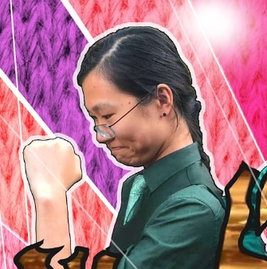

I am.......the KIMBONATOR
My name is Daikyu Kim. People call me Kimbo, and I work in cryptocurrency and blockchain.
And After 6 decades on this earth, I have decided on some self reflection.
My life is a shit-show. It's a circus.
Both my wife and mother in-law went to prison.
My daughter is a wack job and my son is a cross dresser.
I have made millions of dollars scamming investors and tricking people into giving me their money.
My life is filled with regrets, filled with shadows of people I have scammed.
...and I can't stop talking. I just can't stop talking. I just don't know when to stop talking.
.........
My marriage
Long story short, it didn't go well and It's all her fault.
My wife tried to screw me. She and her mother, came after me over money. It was ugly, but I was too smart for them. We went to war and I won. Both of them wound up in prison and I got away scott free.
It was a victory ! (But not for my 2 kids)
Why did she turned on me? Was I not man enough? It's baffling.
I thought I was the MAN. I mean just look at this picture here.

I look like the TERMINATOR.
What lady wouldn't want this?
This is my daughter. She's a retard. (Don't tell her I said that.)
I dreamed that she would grow up to be an intelligent, confident girl, popular amongst her peers. Dreams die hard. Most girls have a life, they have dates, girls night out etc etc.
She has nothing . Her best friend is her cat and myself. It's pathetic.
Why did she turn out like this? Was I a bad role model? Did I raise her wrong?
I blame my wife. It's my wife's fault.
...and I can't stop talking. I just can't stop talking. I just don't know when to stop talking.

This is my son. He's got issues. I don't know who's got it worse. Him or his sister.
I hoped he would grow up to be a strong, confident man. But he didn't want to be a man. He wanted to dress up like a girl, and now wants to be a woman.
So I find myself supporting uni-sex bathrooms. It's just fucked.
Why couldn't I produce decent kids? Not one, but both, are retarded. Was it me? is there something wrong with my genes? Was I not man enough?
All I wanted was a normal son, and look what I got.
I blame my wife. It's my wife's fault.
...and I can't stop talking. I just can't stop talking. I just don't know when to stop talking.
Not afraid
I talk a lot. I just can't stop talking. Anyone will tell you I'm incredibly talkative. I have so much energy, I just don't know how to stop talking.
My life has been a shit show. I have done things I'm not proud of. I have slandered people, framed them, falsely accused them of crimes they didn't commit. I'm not proud of it at all to be honest. But I will push on.
My latest fiasco was with a colleague. They didn't give me the respect I thought I deserved. I wanted to sabotage their lives so I queitly framed them.
I accused them of stalking my daughter and coming to her house. It worked like a charm. People started spreading these rumors on their own. People are so gullible. It was a complete lie. But I didn't care. It worked.
I never fight my own battles. I drag everyone in. Spreading gossip is my absolute specialty. I have been doing it for years.
Some say using your own kids for revenge is extreme. I disagree. It's effective.
..........
Lying, threatening legal action, filing false police reports. That's my life. Police aren't as gullible though. They need this thing called 'evidence', which I had none of. They are mostly useless.
Spreading lies. New lies to cover up old ones. It's a pain. But that's my life.
I don't feel guilt or remorse. So long as I get my revenge, it's all that matters. I am vengeful.
My life has been colorful. Dark at times. Regrets and bitterness. But I am not afraid. I will push on.
I am Kimbo. The terminator.
I am.....the KIMBONATOR.
And I just can't stop talking. I just can't stop talking. I don't stop talking ever. I just talk so much. Talking always talking. I just, endless, talking, never stop talking. I just .... talking talking talking.